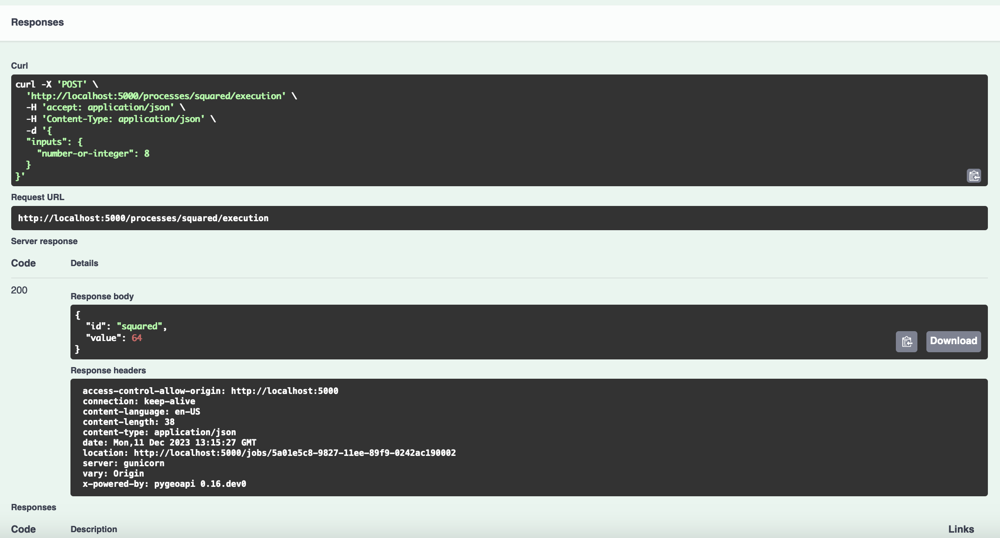

Exercise 8 - Functions via OGC API - Processes
OGC API - Processes supports the wrapping of computational tasks into executable processes that can be offered by a server through a Web API and be invoked by a client application.
OGC API - Processes uses OGC API - Common as a building block, thus enabling streamlined deployment and integration for clients and users.
pygeoapi support
pygeoapi supports the OGC API - Processes specification, with the ability to publish Python code (no matter how simple or complex) as an OGC API Process definition. pygeoapi also support synchronous or asynchronous processing, with the ability to store and retrive the status/results of 'jobs'.
Note
See the official documentation for more information on publishing processes in pygeoapi
Publishing Python code as a process in pygeoapi
With pygeoapi we can setup OGC API - Processes using Python code that implements the pygeoapi BaseProcessor, which is a core pygeoapi
abstract base class. In this exercise we will implemented a "squared" function as a process using the sample Python code in
workshop/exercises/plugins/process/squared.py. The process is already defined to be part of the pygeoapi environment and configuration.
Update the pygeoapi configuration
Open the pygeoapi configuration file in a text editor. Add a new process section as follows:
1 2 3 4 | |
Update Python code
Open the Python code at workshop/exercises/plugins/process/squared.py. Find the execute function and update the Python
code to calculate the input value squared.
Save the configuration and restart Docker Compose. Navigate to http://localhost:5000/processes to evaluate whether the new process has been published. Inspect the detailed process metadata by navigating to http://localhost:5000/processes/squared to inspect how the process metadata defined in the Python code/file is made available in JSON..
Client access
Swagger
The easiest way to test the new process is by using pygeoapi's built in Swagger interface. Navigate to http://localhost:5000/openapi and try out the process in the Swagger UI.



Summary
Congratulations! You are now able to publish Python code as a process to pygeoapi.